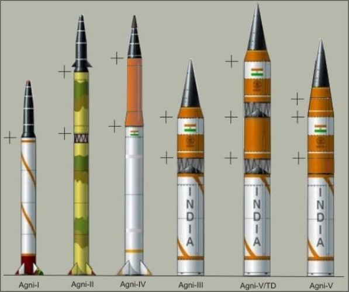
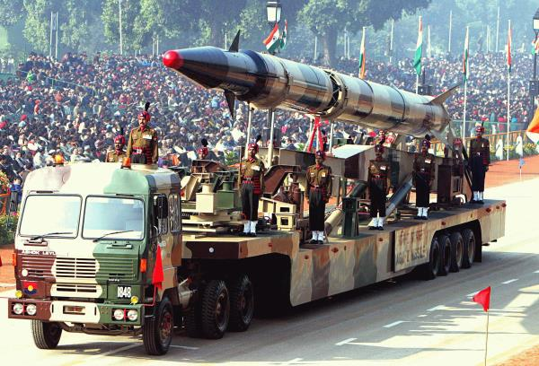
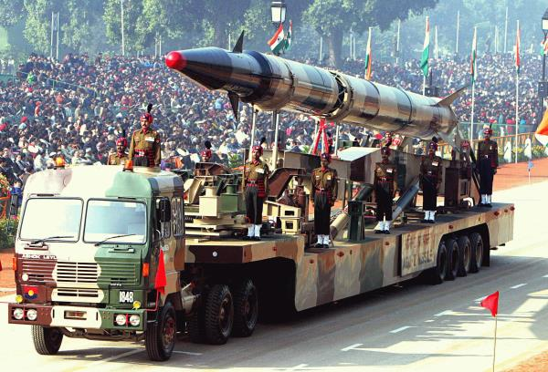
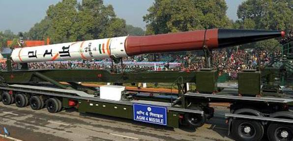
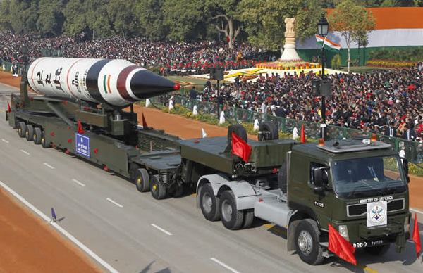
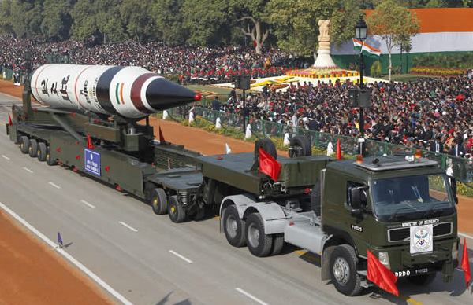

【二炮】印度的烈火系列弹道飞弹
2014-10-15 20:52:00
原文网址：https://blog.udn.com/MengyuanWang/108908649
本周另一篇让我看得直摇头的军事新闻是这一篇有关印度的烈火系列弹道飞弹（Agni Missile）的报导：http://www.chinatimes.com/newspapers/20141014001005-260309。我曾在一家印度人创办的公司里当了两年顾问，发现文化、思想上的隔阂大到非要亲身经歷才会相信。从那之后，我觉得印度人实在是从别的行星来的。我这様说并不是针对一些当地的惊人事实，例如超过一半印度人口每天随地大便，或者最近印度的新热门饮料是牛尿；我所指的是整个印度文化里，喜欢成年空谈或集体做白日梦的习惯。
印度的军事装备研究机构只有一家，叫做DRDO（Defense Research and Development Organization），其官僚和腐化的程度远超过一般印度和非洲的政府机关。虽然有五万多员工和每年百亿美元以上的预算，50多年来还没有发展出任何一项可用于实战的自主装备。简单如突撃步枪和子弹，都是硬卖给印度军方后，因为明显的问题而必须动用紧急预算来外购替换品；炮弹、坦克和战机那就不用提了。台湾的军工事业，相形之下，还算是挺争气的，至少连美军都大量购买了台湾制的子弹。
烈火系列弹道飞弹其实是DRDO的头号亮点，起码在实験状态下有大于50%的机率能落到靶区附近。不过印度人空想做梦的习性，还是让它成为全球笑柄。它实战能力之匮乏、技术工艺之落后，我也不用多说，放几张照片，大家自己看看：
烈火系列的全家福，可以很明显地看出其实只是两种飞弹：小弹径的烈火1、2、4和大弹径的烈火3、5。在美军、俄军和共军序列中，只会给两个编号。可是印度人喜欢夸大至少一倍半，所以二变成了五。 烈火一式，1980年代引进苏联的固态燃料技术拼凑而成。20多年来试射了不到十次，今年才第一次做夜间试射。在其他的国家，这只能算是技术験证品；但是印度陆军已经被迫装备了一个营。弹重12公吨，长15公尺，弹径1.0公尺，射程700公里。在地球上，这算是一枚短程火箭；但是印度人号称中程飞弹，可见所住的行星只有不到地球的一半大。
烈火一式，1980年代引进苏联的固态燃料技术拼凑而成。20多年来试射了不到十次，今年才第一次做夜间试射。在其他的国家，这只能算是技术験证品；但是印度陆军已经被迫装备了一个营。弹重12公吨，长15公尺，弹径1.0公尺，射程700公里。在地球上，这算是一枚短程火箭；但是印度人号称中程飞弹，可见所住的行星只有不到地球的一半大。 共军的东风11A，弹重小于四公吨，长11.25公尺，弹径0.86公尺，射程825公里，不过中共是住在我们这个地球的，所以只称之为短程飞弹。烈火二式，由一式加第二级火箭而成，弹重增加到16公吨，长度达到了惊人的21公尺，射程延伸到2000公里，印度人认为在他们的行星上算是远程飞弹。测试次数比一式还少，DRDO却宣布它已正式部署了；不过印度陆军的意见略有不同。
共军的东风11A，弹重小于四公吨，长11.25公尺，弹径0.86公尺，射程825公里，不过中共是住在我们这个地球的，所以只称之为短程飞弹。烈火二式，由一式加第二级火箭而成，弹重增加到16公吨，长度达到了惊人的21公尺，射程延伸到2000公里，印度人认为在他们的行星上算是远程飞弹。测试次数比一式还少，DRDO却宣布它已正式部署了；不过印度陆军的意见略有不同。 东风21C，也是由两节火箭推进，弹重14.7公吨，长10.5公尺，弹径1.4公尺，射程只有2500公里，共军叫做中程飞弹。
东风21C，也是由两节火箭推进，弹重14.7公吨，长10.5公尺，弹径1.4公尺，射程只有2500公里，共军叫做中程飞弹。
烈火三式；在1990年代，DRDO也注意到他们的飞弹太过细长，虽然空气阻力小，陆上运输却非常不方便，因此把弹径加倍到2.0公尺，弹长因而减至17公尺，弹重号称为22公吨（我觉得以这个大小，应该至少40公吨），射程3500公里。如同二式一様，在是否己经实战部署这个问题上，DRDO和印度陆军有不同的答案。烈火四式，由二式更换略粗的第一级火箭而成。弹重17公吨，长21公尺，弹径1.1公尺，射程4000公里，但是酬载大幅降低。至今只试射了三次，连DRDO都不好意思宣称已经部署。印度版的运载车只能在低重力下才能做越野机动。而且因为其总长接近30公尺，一般的公路上是没法转弯的。至于工艺水准，大家自己做结论吧。
 东风26，射程4000公里。因为还在保密期间，具体参数不详。这张照片是从轿车内偷拍的。运载车比东风21的大一号，有六个轴。烈火五式，实为改进版的三式。虽然只稍微增长到17.5公尺，重量却暴增至50公吨，射程5000公里。印度因此在2012年四月“成功”试射（DRDO对试射成功与否的定义也与眾不同：只要导弹飞出发射区就算成功，即使没有到达靶区也没关系，如2013年二月试射Nirbhay陆基巡航飞弹就是如此而“成功”的）后宣称自己是继美、苏、英、法、中之后的第六个拥有ICBM的国家，美国的大眾媒体个个都转载了这项报导。奇怪的是别人的陆基ICBM的射程都至少有13000公里，也就是地球圆周的1/3，而且北韩更早就试射过6000公里射程的飞弹，在印度人眼里却只算是远程导弹。我由此推导出印度人所住的行星，半径只有2400多公里（地球的半径是6400公里），在太阳系中，刚好只有水星的大小符合。
东风26，射程4000公里。因为还在保密期间，具体参数不详。这张照片是从轿车内偷拍的。运载车比东风21的大一号，有六个轴。烈火五式，实为改进版的三式。虽然只稍微增长到17.5公尺，重量却暴增至50公吨，射程5000公里。印度因此在2012年四月“成功”试射（DRDO对试射成功与否的定义也与眾不同：只要导弹飞出发射区就算成功，即使没有到达靶区也没关系，如2013年二月试射Nirbhay陆基巡航飞弹就是如此而“成功”的）后宣称自己是继美、苏、英、法、中之后的第六个拥有ICBM的国家，美国的大眾媒体个个都转载了这项报导。奇怪的是别人的陆基ICBM的射程都至少有13000公里，也就是地球圆周的1/3，而且北韩更早就试射过6000公里射程的飞弹，在印度人眼里却只算是远程导弹。我由此推导出印度人所住的行星，半径只有2400多公里（地球的半径是6400公里），在太阳系中，刚好只有水星的大小符合。 东风31A，弹重42公吨，长13公尺，弹径为2.25公尺，射程13000公里。最新版的东风31B改装了三枚分导弹头，详见前文《中共的东风31B弹道飞弹》。
东风31A，弹重42公吨，长13公尺，弹径为2.25公尺，射程13000公里。最新版的东风31B改装了三枚分导弹头，详见前文《中共的东风31B弹道飞弹》。
两个礼拜前，英国的卫报（The Guardian，就是帮助Snowden公开NSA窃听行动的报社。在所有英美主要媒体中，卫报是极少数对事实真相还有些尊重的之一）刊登了一篇由着名的荷兰心理学家Paul Verhaeghe所写的文章，叫“新自由主义把人类带坏了”（Neoliberalism has brought out the worst of us，详见http://www.theguardian.com/commentisfree/2014/sep/29/neoliberalism-economic-system-ethics-personality-psychopathicsthic）。他把我在美国学术界和商业界见到的许多不合理的现象，尤其是牛屎文化（Bullshit Culture，详见前文“丁肇中与高能物理界的牛屎文化”）的盛行，做了一个有系统的解释。他的论述简单来说，是这様的：在美国式的絶对自由主义经济制度下，赚銭是唯一的成功，而成功代表了人生的一切。人们有了絶对的自由来忽视伦理、廉耻、道德和良心，只有在金銭上没有任何自由。在这种制度下，成功的人必须能说善道，必须能吹嘘自己，因为等到别人发现不对劲的时候，你早已赚饱跑路，在做下一桩买卖了。例如台湾那些制造黑心油的厰商，往往都有这种所谓的“成功者的性格”。
这和印度人有什么关系呢？印度教教义原本就强调灵魂轮迴，皮相是修行的障碍，物理事实只是心灵的幻觉。所以只要心灵高兴，当然可以“看破”幻觉而自行领会真谛，而这个“真谛”当然是比现实要美好得多的。因此在美国，虽然人人都是吹牛大王，却只有印度人真正相信自己的胡说八道，也就因为这様，他们的胡说八道最有说服力。在美国商业界，大部分的第一代移民能当上CEO（公司总裁）的，都是自己创业。唯一的例外是印度人。现在微软、百事可乐、德意志银行、Adobe、万事达卡等公司都雇了印度人来当总裁，中国人根本比不上。我当然不是说中国人里面没有吹牛拍马之辈，只是中国文化对物质现实太执着、对空想玄虚太排斥，即使是吹牛不脸红的专业骗子，撒起谎时心里还是惦记着自己不是在说实话。美国人自己是这方面的专家，当然比较喜欢内心真诚相信自己的胡扯的印度人了。
【后注】2014年十一月4日，DRDO再次试射了烈火二式，并宣布成功。有趣的是，这个已经“完成”了十几年的飞弹仍然只飞了1200公里。其实以印度的技术实力，烈火飞弹的射程一般不到同重量的东风飞弹的一半，所以烈火二式的2000公里射程只怕也是一片吹胀了的牛皮。
1 条留言
印度的Mars Orbiter是他們航天部門最偉大的成功項目；然而衛星本身非常弱小簡陋，沒有什麽實際科學意義，所用的火箭推力嚴重不足，必須犧牲時間換取最高的能量轉換效率。整個計劃是一個形象工程，爲的純粹是那一句“成功探測火星”，雖然這次賭贏了，但並不代表整體水平達到第一梯隊（美、俄、歐、中、日）。
至於發射Agni導彈到澳洲附近，應該指的是Agni V；它的射程是5000公里，還不如朝鮮。印度在2018年年底完成第七次試射，然後宣佈正式部署。這並不代表它具有真正的實用性：雖然DRDO為導彈加了一個儲存筒，發射車依舊是印度獨有的長板拖車。